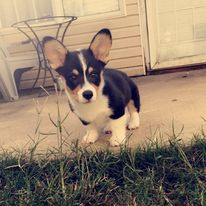

•Duties as IT Administrator include overseeing operating Microsoft Azure data security system, computer and backup setup, and maintaining HIPPA compliance. •Duties as Special Education Tutor include tutoring students with disabilites in reading and spelling. Occasionally, also taught math and science •Duties involved delegating tasks, conflict management, and managing the nearly 300 Greek men at UAB. •Duties included bookkeeping, managing finances, updating rosters, emailing announcements, and reviewing and approving event requests. •Duties included set-up tabling, event pieces, and rooms for events taking place in the UAB student center. •Duties included teaching mathematics up to calculus, reading, chemistry, biology, and physics ranging from 2nd grade to college freshman. •Duties involve tracking all brothers’ grades, arranging tutoring and study sessions, and holding brothers responsible for their GPA. •Duties involve providing additional information on certain parts of the exhibit to visitors and answering questions. •Duties involve filling out medication, working with insurance, and providing an excellent customer service experience •Pelham High school – graduated 2015 •UAB with a degree in Biomedical Sciences and a minor in chemistry - graduated with honors in May of 2020 •Currently enrolled in a Masters Program at UAB for Computer Science •High school Debate team captain – won state •High school golf team captain •High school Lettermen captain •Key club •ATO fraternity at UAB •Honors college at UAB •Interfraternity Council at UAB •Blazing Critics at UAB •Volunteer at Magic City WoodworksExperience
IT Administrator and Special Education Tutor for Alabama Game Changers under the Morris Center - August 2020 to to January 2022
President and Vice President of the Interfraternity Council at UAB - Dec 2017 to Dec 2019
Greek Intern in the Student Involvement office at UAB - Jan 2018 to May 2019
Set-up operator for the UAB Student Center at UAB - August 2015 to December 2015
Tutor at Tutoring Club in Alabaster – Summer 2016
ATO at UAB scholarship chair – January 13th 2016 to December 1st 2016
McWane Science Center tour guide for the human bodies exhibit – January 2016 to May 2016
CVS Pharmacy tech – June 1st 2019 to September 20th 2019
Education
Extracurricular Experience
Thanks for reading
